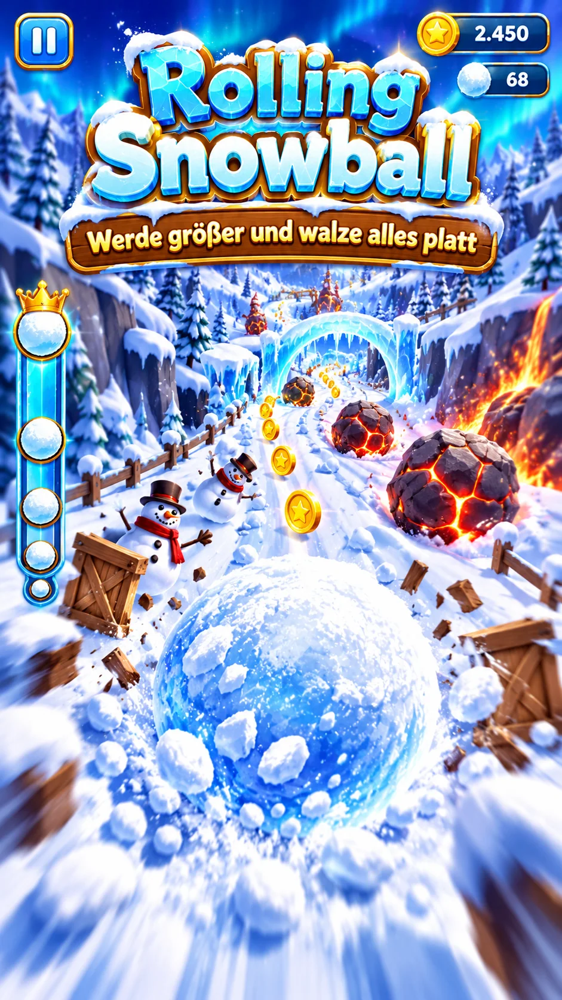
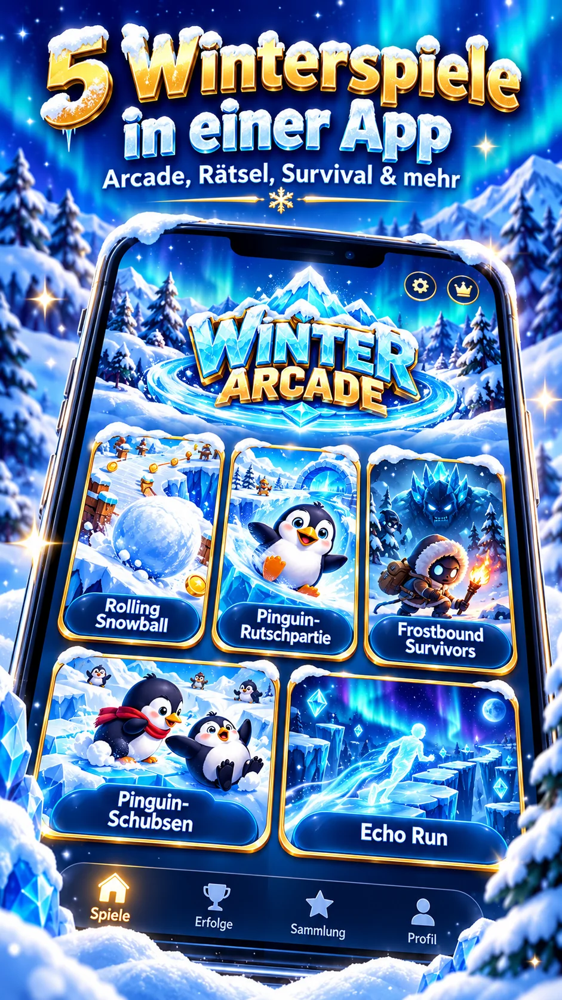
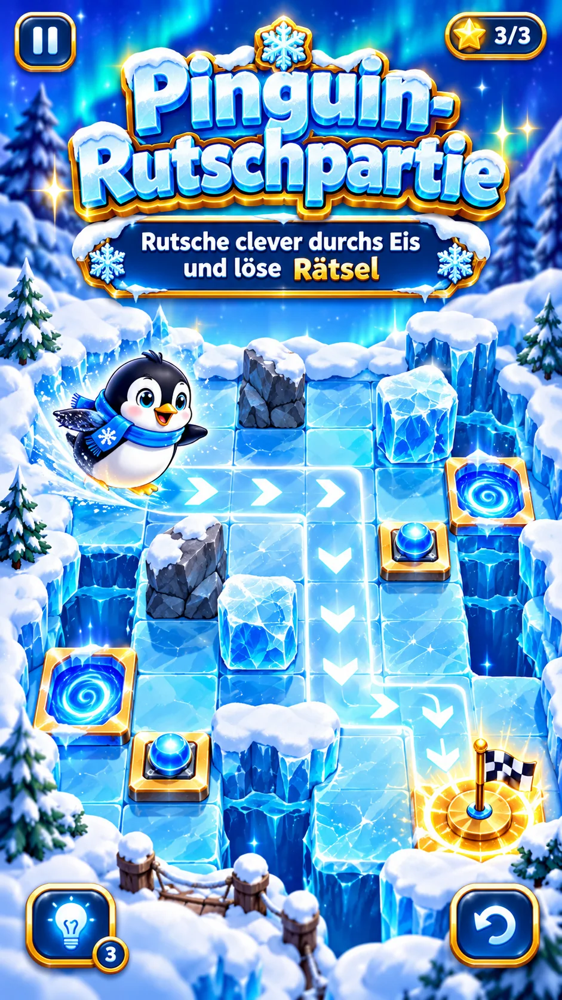
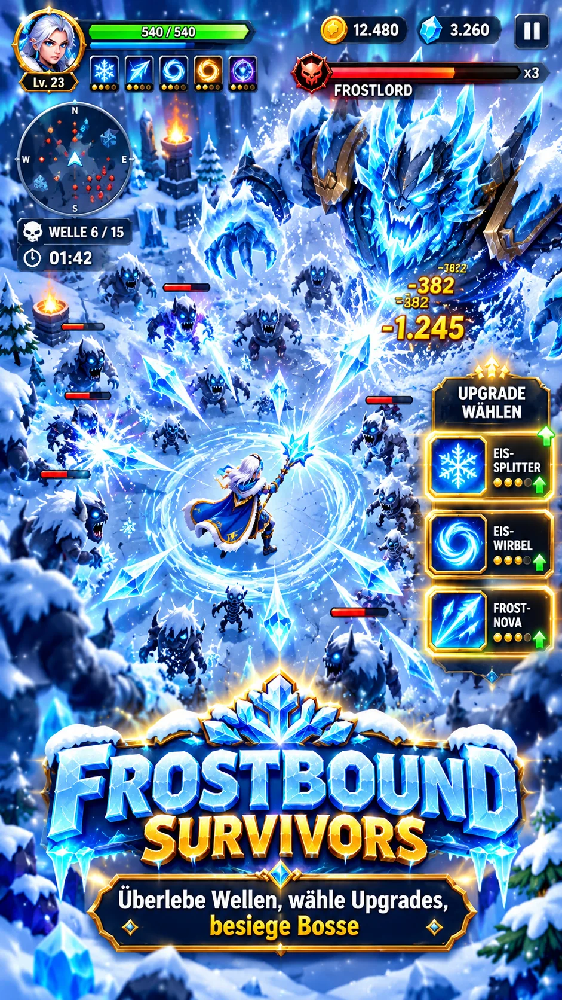
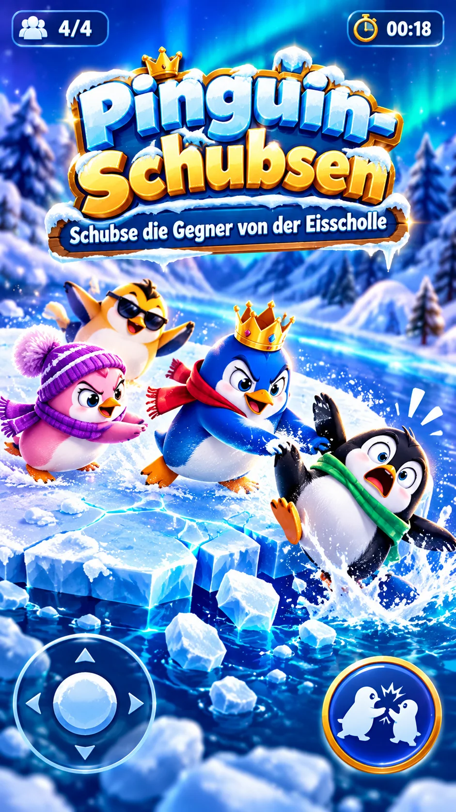
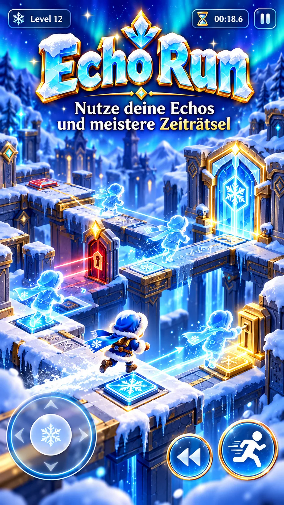

01 / 05Rolling Snowball
Rolle bergab, sammle Schnee und werde immer größer. Aber Vorsicht: Felsen und Feuer lassen dich schrumpfen!
Ein riesiger Schneeball, clevere Pinguine, eisige Monsterwellen und spannende Zeiträtsel. Entdecke fünf völlig unterschiedliche Mini-Games in einer magischen Winterwelt.

Jedes Spiel hat seine eigene Herausforderung. Welches wird dein Favorit?

01 / 05Rolle bergab, sammle Schnee und werde immer größer. Aber Vorsicht: Felsen und Feuer lassen dich schrumpfen!

02 / 05Einmal angestoßen, rutscht der Pinguin bis zum Hindernis. Finde den kürzesten Weg zum Ziel!

03 / 05Überstehe eisige Monsterwellen, verbessere deine Fähigkeiten und stelle dich einem mächtigen Boss.

04 / 05Vier Pinguine, eine schrumpfende Eisscholle. Schubse die drei Bots ins Wasser und bleib als Letzter stehen!

05 / 05Nur zehn Sekunden pro Versuch! Deine früheren Wege werden zu Echos, mit denen du gemeinsam Rätsel löst.
Fünf abwechslungsreiche Spielprinzipien – gemeinsam in einer kompakten Arcade.
Vom actionreichen Schneeball-Abenteuer bis zum kniffligen Zeiträtsel: Hier gibt es immer etwas Neues zu entdecken.
Einfache Touch-Steuerung und kurze Spielrunden – ideal für zwischendurch.
Bewerte deine Runden mit Sternen und finde heraus, welches Mini-Game dir am meisten Spaß macht.
Pinguine, Eisrätsel, Schneebälle und Monsterwellen verbinden sich zu einer frostigen Arcade-Collection.
Erste Artworks für die fünf Spiele. Tippe auf ein Bild für die Großansicht.
Wichtig: Diese Bilder sind KI-generierte Designkonzepte und zeigen noch keine verifizierten Aufnahmen aus dem aktuellen Unity-Spiel.
Winter-Arcade entsteht mit Unity 6 für Smartphones. Die fünf Minispiele wurden als Prototypen entwickelt. Der nächste Schritt: echte Gerätetests, Gameplay-Feinschliff und ein durchgängiger Grafikstil.
Ein Android- oder iOS-Release ist noch nicht bestätigt. Die gezeigten Marketingbilder sind Konzeptillustrationen.
Unterschiedliche Winter-Mechaniken und Browser-Prototypen.
Fünf Spiele nach C# übertragen; Kompilierung mit Test-Stubs geprüft.
Steuerung, Layout und Spielabläufe auf echten Geräten prüfen.
Grafik, Audio, Balancing und Store-Release erst nach den Tests.
Winter-Arcade ist in Entwicklung. Sobald die Store-Seiten veröffentlicht sind, findest du hier die offiziellen Links.
Die wichtigsten Fragen rund um Winter-Arcade.
Nein. Das Projekt befindet sich in der Prototyp- und Testphase. Offizielle Downloadlinks folgen erst nach einer bestätigten Veröffentlichung.
Rolling Snowball, Pinguin-Rutschpartie, Frostbound Survivors, Pinguin-Schubsen und Echo Run.
Geplant sind Android- und iOS-Smartphones im Hochformat. Der aktuelle Entwicklungsstand ist ein Unity-6-Prototyp.
Nein. Die gezeigten Premium-Grafiken sind Konzeptillustrationen. Sie zeigen die gewünschte Designrichtung und noch nicht die nachweislich getestete Spielgrafik.